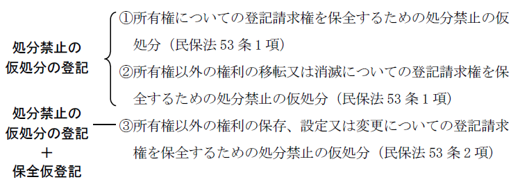
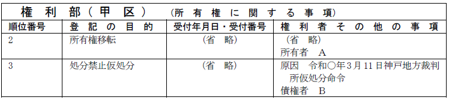
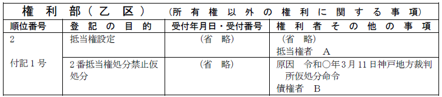
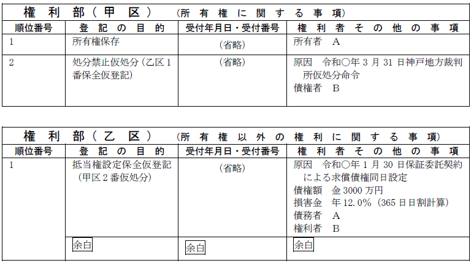
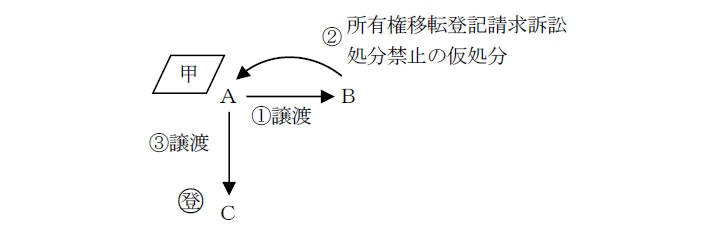
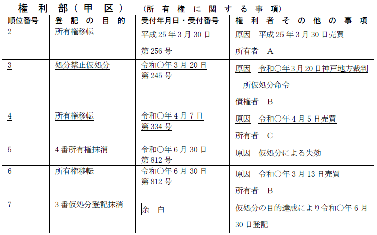
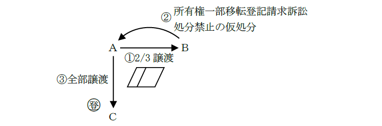
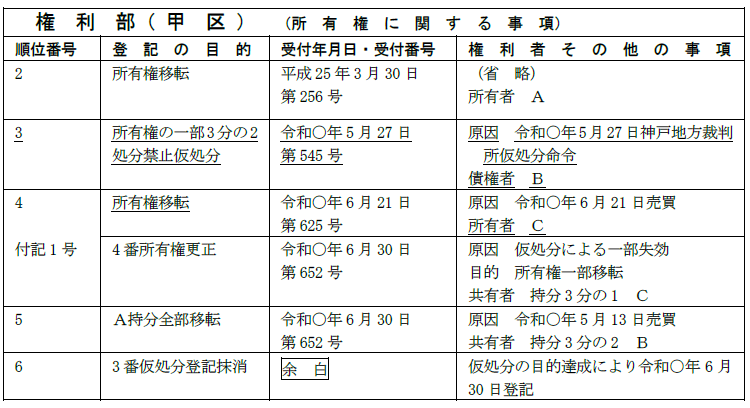

第１編 各 論
第10章 判決等による登記
第２節 仮処分による登記
1. 処分制限の登記
権利の処分が法律の規定により制限される場合になされる登記である。よって、当事者の任意契約により処分の制限の登記をすることはできない（昭41.8.3民甲2367）。
処分の制限は、裁判所が決定し、その登記は裁判所書記官の嘱託によってなされる（民保法53条3項、47条3項）。
処分の制限の登記を嘱託する場合、登記権利者が2名以上であっても、各権利者についてその持分を記載することを要しない（昭35.8.20民3.842）。
2. 処分禁止の登記
処分禁止の登記は、不動産に関する権利について登記請求権を保全するために発せられる処分禁止の仮処分の執行方法としてなされる。
不動産の登記請求権を保全するための処分禁止の仮処分の方法は、次の3類型がある（平2.11.8民3.5000）。

【①又は②の場合】
①又は②の場合は、処分禁止の仮処分の登記のみをする方法による（民保法53条1項）。
（①の例）

（②の例）

【③の場合】
処分禁止の仮処分の登記とともに保全仮登記をする方法による（民保法53条2項）。
（③の例）

1. 登記の可否
①共有でない不動産の所有権の一部について、処分禁止の仮処分の登記をすることができるか？
→できる（昭30.4.20民甲695）。
②仮登記に基づく本登記手続を禁止する旨の仮処分の登記をすることができるか？
| →できない（昭30.8.25民甲1721）。 |
不動産登記法は、106条において仮登記に基づいて本登記をした場合は、当該本登記の順位は当該仮登記の順位によると規定しているところ、仮に仮登記に基づく本登記禁止の仮処分をしたとしても、その仮処分の登記は仮登記に基づく本登記よりも後順位であって、仮処分債権者は、本登記の登記権利者に対抗することができない等の理由が挙げられる。
2. 前提としての相続登記の要否
①不動産の所有権移転登記をする前に売主が死亡した場合において、買主が売主の相続人に当該不動産の所有権移転登記手続を求めるとともに、「債務者被相続人甲の相続人乙について一切の処分を禁ずる」旨の仮処分命令を得たときは、処分禁止の仮処分の登記をする前提として相続の登記は不要である（昭62.6.30民3.3412）。
②被相続人Ａ名義で登記されている不動産に関して、共同相続人の1人であるＢの持分について処分禁止の仮処分の登記をするには、その前提として、相続の登記を要する（昭39.5.14民甲1759）。
処分禁止の登記の後にされた登記に係る権利の取得又は処分の制限は、その仮処分の債権者が保全すべき登記請求権に係る登記をする場合には、その登記に係る権利の取得又は消滅と抵触する限度において、その債権者に対抗することができない（民保法58条1項）。
そこで、その仮処分の債権者は、この仮処分の効力を援用して、仮処分の登記に後れる登記を単独で抹消することができる（民保法58条2項、111条1項、2項）。仮処分の登記に後れる登記とは、仮処分の登記より後順位の登記のうち、仮処分に対抗することができることが登記記録上明らかな登記を除いたものである（平2.11.8民3.5000）。
ex.所有権移転の登記請求権を保全するための処分禁止の仮処分の登記がされた場合には、仮処分債権者は、所有権移転の登記と同時に申請することにより、単独で当該仮処分の登記に後れる登記を抹消することができるが、仮処分の登記前に設定の登記がされた抵当権の登記名義人を申立人とする競売開始決定に係る差押えの登記を抹消することはできない（平2.11.8民3.5000、昭58.6.22民3.3672）。
| 事例 | 単独抹消の可否 | ||
| 所有権 | 所有権について処分禁止の登記がされた後、処分禁止の登記に係る仮処分の債権者が仮処分の債務者を登記義務者とする所有権の登記（仮登記を除く。）を申請する場合 | ○ | |
| 所有権以外の権利の移転又は消滅 | 所有権以外の権利について処分禁止の登記がされた後、処分禁止の登記に係る仮処分の債権者が仮処分の債務者を登記義務者とする当該権利の移転又は消滅に関し登記（仮登記を除く。）を申請する場合 | ○ | |
| 所有権以外の保存・設定・変更 | 不動産の使用又は収益をする権利について保全仮登記がされた後、当該保全仮登記に係る仮処分の債権者が本登記を申請する場合 | ア.処分禁止の登記に後れる登記が所有権以外の不動産の使用若しくは収益をする権利又は当該権利を目的とする権利に関する登記である場合 ex 賃借権設定、地上権設定 | ○※1※2 |
| イ.ア以外の場合 ex.質権設定 | × | ||
※1 使用収益しない旨の特約のない不動産質権の登記を抹消できるか？
→できない（平2.11.8民3.5000）。
質権の本質的部分は担保権の部分にあるので、使用・収益部分についてのみ対抗できないとすれば十分だからである。
※2 保全仮登記に基づく本登記の申請は、判決による登記に限らず、共同申請によることもできる（平2.11.8民3.5000）。
【申請例140 仮処分の登記（仮処分による失効）】
【申請例141 所有権移転（判決による登記）】
事例： 令和○年3月13日、ＡとＢは、Ａ所有の甲土地をＢに売却する契約を締結した。同月20日、Ｂは、Ａが、所有権移転登記に応じなかったため所有権移転登記請求訴訟を提起し、同時に当該請求権を保全するために処分禁止の仮処分の申立てもし、仮処分の登記がなされた。その後、甲土地は、Ｃに売却され登記がなされた。令和○年6月27日、Ｂの請求を全部認容する判決がなされ、確定した。令和○年6月28日、ＢのＣに対する、内容証明郵便（配達証明書付）が、Ｃに到達した。土地の課税標準の額は、1000万円である。

1件目
2件目

1. 全部失効
仮処分に後れる登記を抹消する場合の申請情報の内容は、以下のようになる。
(1) 登記の目的
「◯番所有権抹消」「◯番抵当権抹消」等と記載する。
(2) 登記原因及びその日付
「仮処分による失効」と記載し、日付の記載を要しない。
(3) 申請人
「義務者 Ｃ
申請人 Ｂ」等と記載する。
権利者は記載しない。
(4) 添付情報
・通知をしたことを証する情報（不登令別表71添付情報、72添付情報）
※登記原因証明情報の提供を要しない。登記原因という法律行為が存在しないためである。
【申請例142 仮処分の登記（一部失効）】
【申請例143 共有者持分全部移転（判決による登記）】
事例： 令和○年5月13日、ＡとＢは、Ａ所有の甲土地の3分の2をＢに売却する契約を締結した。同月27日、Ｂは、Ａが、登記に応じなかったため所有権一部移転登記請求訴訟を提起し、同時に当該請求権を保全するために処分禁止の仮処分の申立てもし、仮処分の登記がなされた。その後、甲土地はＣに売却され、登記がなされた。令和○年6月27日、Ｂの請求を全部認容する判決がなされ、確定した。令和○年6月28日、ＢのＣに対する内容証明郵便（配達証明書付）が、Ｃに到達した。土地の課税標準の額は、金900万円である。

1件目
2件目

2. 一部失効
仮処分に後れる登記の一部を抹消する場合の申請情報の内容は、以下のようになる。
(1) 登記の目的
「何番所有権更正」等と記載する。
一部抹消登記は認められていないため、更正登記となる。
(2) 登記原因及びその日付
「仮処分による一部失効」と記載し、日付の記載を要しない（平2.11.8民3.5000）。
(3) 登記事項
更正後の事項として正しい目的・持分を表示する。
(4) 申請人
「義務者 Ｃ
申請人 Ｂ」等と記載する。
権利者は記載しない。
(5) 添付情報
・通知をしたことを証する情報（不登令別表71添付情報、72添付情報）
※登記原因証明情報の提供を要しない。登記原因という法律行為が存在しないためである。
3. 仮処分の登記の抹消
(1) 仮処分債権者による処分禁止の仮処分の登記に後れる登記の抹消の申請があったとき
仮処分債権者による処分禁止の仮処分の登記に後れる登記の抹消の申請があった場合、登記官が職権で、仮処分の登記を抹消する（111条3項）。仮処分の効力を援用したことが明らかであり、仮処分の登記はもう必要ないとわかるからである。
(2) 仮処分債権者が、当該処分禁止の仮処分に後れる登記の抹消の申請をしないとき
仮処分債権者が、当該処分禁止の仮処分に後れる登記の抹消の申請をしないときは、仮処分債権者の申立てにより、裁判所書記官が仮処分の登記の抹消を嘱託する（民保規48条1項）。
この合、 仮処分の効力が援用されたことが明らかではないからである。
(3) 保全仮登記に基づく本登記をするとき
保全仮登記に基づく本登記をするときは、登記官は、職権で、当該保全仮登記とともにした処分禁止の登記を抹消しなければならない（114条）。
仮処分の効力が援用されたことが明らかであるからである。
1. 保全仮登記の更正
保全仮登記の更正は、共同申請によることはできず（平2.11.8民3.5000）、仮処分債権者の申立てにより、仮処分命令を発した裁判所が、その命令を更正し、更正決定が確定したときは、裁判所書記官は、利害関係を有する第三者の承諾を証する情報を提供して、保全仮登記の更正を嘱託しなければならない（民保法60条1項、3項）。
2. 権利能力なき社団
権利能力なき社団は、登記請求権保全のための処分禁止の仮処分の登記について登記権利者になることはできない（登研457P.120）。